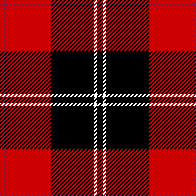

Scavenger Hunt!
Camera!
There will be content here.
Cailean Networks Design

Category: Data and Networking
Booth C430
- Ensuring that your online application and data is available to your customers and employees is key to the success of any business. Managing potential network or server overloads as well as having a fail over plan are essential in providing a responsive, satisfying and an always available online customer experience. Call us today for a free network health evaluation.

Tartan B

Tartan C

Tartan D

Tartan E

Tartan F
- 
Tartan G

Tartan H

Tartan I

Tartan J

Tartan K

Tartan L